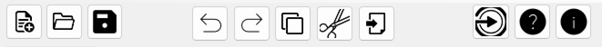

Справка
Панель инструментов

Панель инструментов (см. рисунок А.7) содержит кнопки вызова часто используемых пунктов меню:
- Создание документа
- Открытие документа
- Сохранение текущих изменений в документе
- Отмена изменений
- Повтор последнего изменения
- Вырезать текстовый фрагмент
- Вырезать текстовый фрагмент
- Копировать текстовый фрагмент
- Вставить текстовый фрагмент
- Запуск синтаксического анализатора
Пункт меню "Файл"
- Создать - создание файла
- Открыть - открытие файла
- Сохранить - сохранение текущего документа
- Сохранить как - сохранине файла с указанием места
- Выход - закрывает программу
Пункт меню "Правка"
- Отменить - отменяет последние изменения
- Повторить - возвращает отмененные изменения
- Вырезать - вырезает выделенный фрагмент текста
- Копировать - копирует выделенный текст
- Вставить - вставляет текст из буфера обмена в документ
- Удалить - удаляет выделенный фрагмент текста
- Выделить все - выделяет все в документе